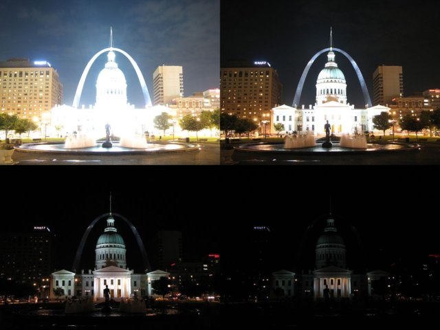
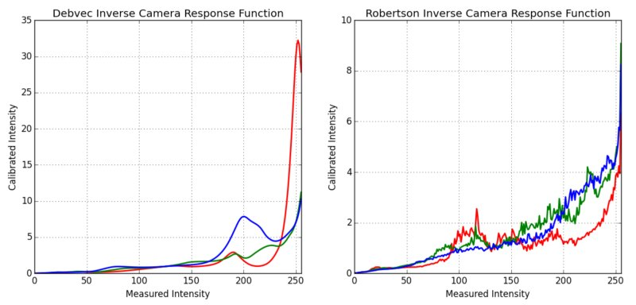

High Dynamic Range (HDR)
Goal
In this chapter, we will
- Learn how to generate and display HDR image from an exposure sequence.
- Use exposure fusion to merge an exposure sequence.
Theory
High-dynamic-range imaging (HDRI or HDR) is a technique used in imaging and photography to reproduce a greater dynamic range of luminosity than is possible with standard digital imaging or photographic techniques. While the human eye can adjust to a wide range of light conditions, most imaging devices use 8-bits per channel, so we are limited to only 256 levels. When we take photographs of a real world scene, bright regions may be overexposed, while the dark ones may be underexposed, so we can’t capture all details using a single exposure. HDR imaging works with images that use more than 8 bits per channel (usually 32-bit float values), allowing much wider dynamic range.
There are different ways to obtain HDR images, but the most common one is to use photographs of the scene taken with different exposure values. To combine these exposures it is useful to know your camera’s response function and there are algorithms to estimate it. After the HDR image has been merged, it has to be converted back to 8-bit to view it on usual displays. This process is called tonemapping. Additional complexities arise when objects of the scene or camera move between shots, since images with different exposures should be registered and aligned.
In this tutorial we show 2 algorithms (Debvec, Robertson) to generate and display HDR image from an exposure sequence, and demonstrate an alternative approach called exposure fusion (Mertens), that produces low dynamic range image and does not need the exposure times data. Furthermore, we estimate the camera response function (CRF) which is of great value for many computer vision algorithms. Each step of HDR pipeline can be implemented using different algorithms and parameters, so take a look at the reference manual to see them all.
Exposure sequence HDR
In this tutorial we will look on the following scene, where we have 4 exposure images, with exposure times of: 15, 2.5, 1/4 and 1/30 seconds. (You can download the images from Wikipedia)
1. Loading exposure images into a list
The first stage is simply loading all images into a list. In addition, we will need the exposure times for the regular HDR algorithms. Pay attention for the data types, as the images should be 1-channel or 3-channels 8-bit (np.uint8) and the exposure times need to be float32 and in seconds.
import cv2 import numpy as np # Loading exposure images into a list img_fn = ["img0.jpg", "img1.jpg", "img2.jpg", "img3.jpg"] img_list = [cv2.imread(fn) for fn in img_fn] exposure_times = np.array([15.0, 2.5, 0.25, 0.0333], dtype=np.float32)
2. Merge exposures into HDR image
In this stage we merge the exposure sequence into one HDR image, showing 2 possibilities which we have in OpenCV. The first method is Debvec and the second one is Robertson. Notice that the HDR image is of type float32, and not uint8, as it contains the full dynamic range of all exposure images.
# Merge exposures to HDR image merge_debvec = cv2.createMergeDebevec() hdr_debvec = merge_debvec.process(img_list, times=exposure_times.copy()) merge_robertson = cv2.createMergeRobertson() hdr_robertson = merge_robertson.process(img_list, times=exposure_times.copy())
3. Tonemap HDR image
We map the 32-bit float HDR data into the range [0..1]. Actually, in some cases the values can be larger than 1 or lower the 0, so notice we will later have to clip the data in order to avoid overflow.
# Tonemap HDR image tonemap1 = cv2.createTonemapDurand(gamma=2.2) res_debvec = tonemap1.process(hdr_debvec.copy()) tonemap2 = cv2.createTonemapDurand(gamma=1.3) res_robertson = tonemap2.process(hdr_robertson.copy())
4. Merge exposures using Mertens fusion
Here we show an alternative algorithm to merge the exposure images, where we do not need the exposure times. We also do not need to use any tonemap algorithm because the Mertens algorithm already gives us the result in the range of [0..1].
# Exposure fusion using Mertens merge_mertens = cv2.createMergeMertens() res_mertens = merge_mertens.process(img_list)
5. Convert to 8-bit and save
In order to save or display the results, we need to convert the data into 8-bit integers in the range of [0..255].
# Convert datatype to 8-bit and save res_debvec_8bit = np.clip(res_debvec*255, 0, 255).astype('uint8') res_robertson_8bit = np.clip(res_robertson*255, 0, 255).astype('uint8') res_mertens_8bit = np.clip(res_mertens*255, 0, 255).astype('uint8') cv2.imwrite("ldr_debvec.jpg", res_debvec_8bit) cv2.imwrite("ldr_robertson.jpg", res_robertson_8bit) cv2.imwrite("fusion_mertens.jpg", res_mertens_8bit)
Results
You can see the different results but consider that each algorithm have additional extra parameters that you should fit to get your desired outcome. Best practice is to try the different methods and see which one performs best for your scene.
Debvec:

Robertson:

Mertenes Fusion:

Estimating Camera Response Function
The camera response function (CRF) gives us the connection between the scene radiance to the measured intensity values. The CRF if of great importance in some computer vision algorithms, including HDR algorithms. Here we estimate the inverse camera response function and use it for the HDR merge.
# Estimate camera response function (CRF) cal_debvec = cv2.createCalibrateDebevec() crf_debvec = cal_debvec.process(img_list, times=exposure_times) hdr_debvec = merge_debvec.process(img_list, times=exposure_times.copy(), response=crf_debvec.copy()) cal_robertson = cv2.createCalibrateRobertson() crf_robertson = cal_robertson.process(img_list, times=exposure_times) hdr_robertson = merge_robertson.process(img_list, times=exposure_times.copy(), response=crf_robertson.copy())
The camera response function is represented by a 256-length vector for each color channel. For this sequence we got the following estimation:
Additional Resources
- Paul E Debevec and Jitendra Malik. Recovering high dynamic range radiance maps from photographs. In ACM SIGGRAPH 2008 classes, page 31. ACM, 2008.
- Mark A Robertson, Sean Borman, and Robert L Stevenson. Dynamic range improvement through multiple exposures. In Image Processing, 1999. ICIP 99. Proceedings. 1999 International Conference on, volume 3, pages 159–163. IEEE, 1999.
- Tom Mertens, Jan Kautz, and Frank Van Reeth. Exposure fusion. In Computer Graphics and Applications, 2007. PG‘07. 15th Pacific Conference on, pages 382–390. IEEE, 2007.
- Images from Wikipedia-HDR
Exercises